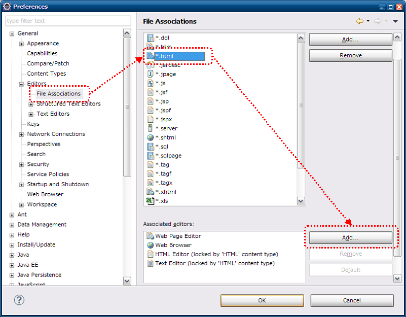
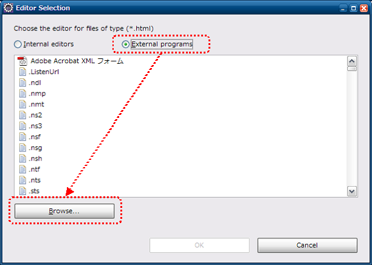

3.3.1.2. Request Unit Data Creation Tool Installation Guide¶
This section describes how to install the Request Unit Data Creation Tool.
3.3.1.2.1. Prerequisites¶
The following prerequisites must be met to use this tool.
- The following tools have been installed.
- Java
- Maven
- The project is managed by Maven.
- HTML file must be associated with the browser.
- Browser proxy setting must exclude localhost.
3.3.1.2.2. Method of provision¶
This tool is provided in the following jar.
- nablarch-testing-XXX.jar
- nablarch-testing-jetty6-XXX.jar (for Java 8 and earlier versions)
- nablarch-testing-jetty9-XXX.jar (for Java 11 and later versions)
Therefore, make sure that the following descriptions are included in the dependencies element of pom.xml.
<dependencies>
<!-- omit -->
<dependency>
<groupId>com.nablarch.framework</groupId>
<artifactId>nablarch-testing</artifactId>
<scope>test</scope>
</dependency>
<!-- For use with Java 8 or earlier versions -->
<dependency>
<groupId>com.nablarch.framework</groupId>
<artifactId>nablarch-testing-jetty6</artifactId>
<scope>test</scope>
</dependency>
<!-- For use with Java 11 or later versions -->
<dependency>
<groupId>com.nablarch.framework</groupId>
<artifactId>nablarch-testing-jetty9</artifactId>
<scope>test</scope>
</dependency>
<!-- omit -->
</dependencies>
Execute the following command in the project directory to download the jar file.
mvn dependency:copy-dependencies -DoutputDirectory=lib
Place the following files in the same directory as project pom.xml.
3.3.1.2.3. Integration with Eclipse¶
This tool can be launched from Eclipse with the following settings.
3.3.1.2.3.1. Configuration Screen Startup¶
From the toolbar, select Window → Preference. Select General → Editors → File Associations from the left pane, select * .html from the right pane and click the Add button.
{kind=link}
3.3.1.2.3.2. External program selection¶
Select External Program from the radio button and click the Browse button.
{kind=link}
{kind=link}
{kind=link}